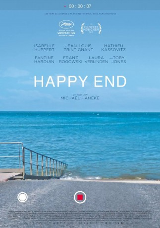
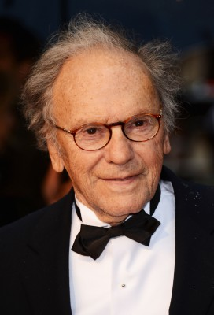
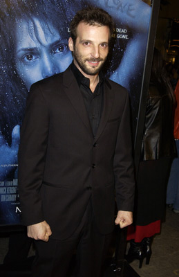
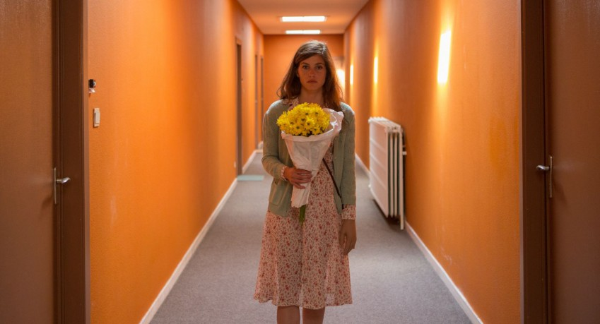
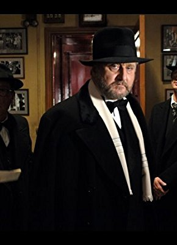
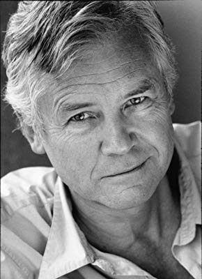

#8651 Happy End
 
 IMDB-Wertung: 6.8 / 10
IMDB-Wertung: 6.8 / 10  Tomatometer: 70
Tomatometer: 70  Metascore: 72
Metascore: 72 
Happy End ist ein satirischer Alptraum des Reichtums im großbürgerlichen Europa: So klar, brilliant und unversöhnlich wie Halogenlicht. Es ist so mitreißend wie eine teuflische Soapopera, eine Dynastie der verlorenen Seelen.
Jahr: 2017
Dauer: 108 Minuten
FSK: 12
Land: Frankreich Studio: X Verleih AGTonspuren: DTS - ,
Untertitel:
Auflösung: 1080p (1920x1040) Größe: 5570 MB
Genre: Drama
Regisseur: Michael Haneke
Drehbuch: Michael Haneke
Soundtrack:
Darsteller:
 Isabelle Huppert als Anne Laurent
Isabelle Huppert als Anne Laurent-  Jean-Louis Trintignant als Georges Laurent
-  Mathieu Kassovitz als Thomas Laurent
- Fantine Harduin als Eve Laurent
- Franz Rogowski als Pierre Laurent
-  Laura Verlinden als Anaïs
 Toby Jones als Lawrence Bradshaw
Toby Jones als Lawrence Bradshaw- Hassam Ghancy als Rachid
- Nabiha Akkari als Jamila
-  Philippe du Janerand als Maître Barin
 Nathalie Richard als L'agent immobilier
Nathalie Richard als L'agent immobilier- Aurélia Petit als Nathalie
- Hille Perl als La gambiste
- Joud Geistlich als Selin
- Dominique Besnehard als Marcel, le coiffeur
- Bruno Tuchszer als Inspecteur chantier 1
- Alexandre Carrière als Inspecteur chantier 2
-  David Yelland als Le directeur de la banque anglaise
- Waël Sersoub als Le bagarreur
- Marie-Pierre Feringue als Le témoin bagarre
- Maryline Even als Epouse victime
- Maëlle Bellec als L'amie d'Anaïs
- David El Hakim als Serveur buvette plage
- Frédéric Lampire als Le maître d'hôtel
- Timothé 'Tim' Buquen als Le jeune youtubeur
- Jack Claudany als Un convive (uncredited)
- Dounia Sichov als Jeune Femme (uncredited)
- Jackee Toto als Un migrant (uncredited)
Datei: X:\2017(G-M)\Happy End (2017, FSK12, 1920x1040).mkv seit 13.04.2018
Festplatte: HD 2017(A-Z)-2018(A-F)
 Es gibt insgesamt 148 Filme in der Gruppe '2017(G-M)'
Es gibt insgesamt 148 Filme in der Gruppe '2017(G-M)'